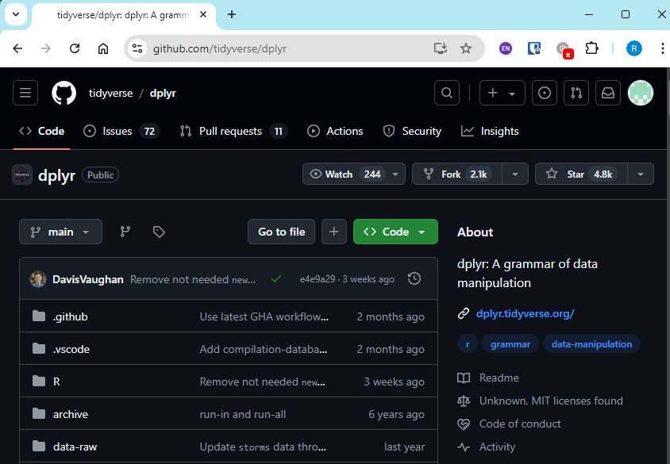
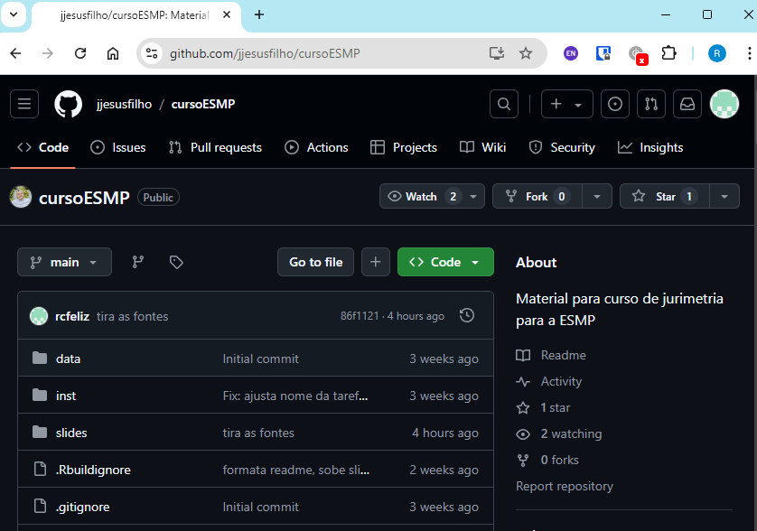

Aula 04 - Introdução ao R
Objetivos da aula
- Compreender o
base R - Introduzir o
tidyverse - Aprender os verbos básicos do
dplyr
Como a aula está planejada?
- Serão três “pílulas” de aula
- Cada pílula terá a seguinte estrutura (flexível)
- 15min de exposição
- 20min de exercícios
- 20min de resolução
- 5min de intervalo
Pílula 1
I R, RStudio, IDE ?
- R é a linguagem de programação.
- Mas você precisa programar essa linguagem em algum lugar.
- Para isso, precisamos de um lugar para digitar o código e outro lugar para executar o código
- Podemos até digitar em R em uma mensagem de WhatsApp, em um bloco de texto, ou em uma pesquisa Google. Entretanto, esses códigos não vão “fazer nada”.
- A gente precisa fazer esses códigos serem executados
I R, RStudio, IDE ?
- Para juntar o lugar em que digitamos/editamos com o lugar em que executamos, usamos alguns ambientes de programação integrados, conhecidos como IDE (Integrated Development Environment).
- A IDE do R mais usada é o RStudio, mas essa não é a única IDE possível
I Familiarizando-nos com o RStudio
- Source
- Console
- Environment
- Files
I Base R x pacotes
Existem “coisas” que já vem no R assim que você instala; e “coisas” que outras pessoas criaram com base no que já veio no R e que você precisa instalar.
- As “coisas” que já vem no R, nós chamamos de
base R - As “coisas” que foram criadas por outras pessoas, nós chamamos de pacotes
I Chamando funções (function calling)
Para “chamar” funções, usamos a notação:
- O elemento que merece um destaque especial aqui são os parênteses
()
I Chamando funções (function calling)
Funções recebem “argumentos”; e cada argumento recebe “valores”.
- Quem dá o nome dos argumentos é a própria função (você deve obedecer aos nomes que ela te oferece)
- Quem dá o nome dos valores é você mesmo
I Vamos falar sobre nomes
- Falar de “nomes” de valores só faz sentido quando criamos objetos.
- Para criar objetos, fazemos uma atribuição, representada por
<-
I Vamos falar sobre nomes
Os nomes devem obedecer a certas regras:
- podem conter letras, números e caracteres especiais (apenas
_e.) - não pode se iniciar com números ou caracteres especiais
- é case sensitive
I Vamos falar sobre nomes
Existem certas convenções sobre nomes:
- camelCase: As partes do nome são marcadas por letras maiúsculas
- snake_case: As partes do nome são marcadas por underline
_
A convenção no R é usar o snake_case
I Vetores
A unidade básica do R são os vetores. Existem dois tipos (mais um) de vetores:
- Vetores atômicos (atomic vectors) : São sequências de valores homogêneos. Os tipos de valores mais comuns são: logical, numeric (integer e double) e character.
- Listas (lists) : São sequências heterogêneas de valores.
NULL: É o não-vetor, ou um vetor de tamanho 0
I Vetores

I Vetores
- A função
c()é muito importante para os vetores. Ela serve para combinar valores dentro de si.
I Vetores
Qual dos seguintes vetores são atômicos e quais são listas?
- Todos são vetores atômicos
- Os vetores 1 e 3 são vetores atômicos e os vetores 2 e 4 são listas
- Os vetores 1 e 2 são vetores atômicos e os vetores 3 e 4 são listas
- Todos são listas
I Vetores
Qual dos seguintes vetores são atômicos e quais são listas?
- Todos são vetores atômicos
- Os vetores 1 e 3 são vetores atômicos e os vetores 2 e 4 são listas
- Os vetores 1 e 2 são vetores atômicos e os vetores 3 e 4 são listas
- Todos são listas
I Vetores
O que vocês acham do seguinte vetor? Ele é um vetor atômico ou uma lista?
- É um vetor atômico do tipo numeric (seja integer, seja double)
- É uma lista com elementos do tipo double, character e integer
- É um vetor atômico do tipo character
I Vetores
O que vocês acham do seguinte vetor? Ele é um vetor atômico ou uma lista?
- É um vetor atômico do tipo numeric (seja integer, seja double)
- É uma lista com elementos do tipo double, character e integer
- É um vetor atômico do tipo character
I Vetores
O que vocês acham dos seguintes vetores? São vetores atômicos ou listas?
- Ambos vetores são vetores atômicos.
- O vetorA é um vetor atômico e o vetorB é uma lista.
- O vetorA é uma lista e o vetorB é um vetor atômico.
- Ambos os vetores são listas.
I Vetores
O que vocês acham dos seguintes vetores? São vetores atômicos ou listas?
- Ambos vetores são vetores atômicos.
- O vetorA é um vetor atômico e o vetorB é uma lista.
- O vetorA é uma lista e o vetorB é um vetor atômico.
- Ambos os vetores são listas.
I Vetores
- Existe uma função do
base Rchamadatypeof(). Ela checa o tipo de vetores.
I Vetores
I Atribuição (assignement)
- Já vimos o operador
<-. Ele servia para “colocar” um valor “dentro” um objeto.
- Esse procedimento se chama “atribuição” (assignement), ou seja, eu “atribuo” um valor a um objeto.
I Atribuição (assignement)
- Outra forma de atribuição é por meio do operador
=
- Mas vamos usar apenas o operador
<-
I Comparações
Podemos agora comparar objetos entre si. Todas as comparações resultam em uma avaliação do tipo
TRUE/FALSE.Algumas comparações possíveis são:
- a > b
- a < b
- a == b
- a >= b
- a <= b
I Comparações
- Cuidado com floating point
- O que vocês esperam que seja o resultado da seguinte expressão? TRUE ou FALSE?
I Comparações
- Cuidado com floating point
- O que vocês esperam que seja o resultado da seguinte expressão? TRUE ou FALSE?
I Comparações
- Cuidado com floating point

I Baixando pacotes
Para baixar pacotes usamos a seguinte função nativa (do base R):
A lista de todos pacotes possíveis que podem entrar em “nome do pacote” está disponível no CRAN (Comprehensive R Archive Network):
https://cran.r-project.org/web/packages/available_packages_by_name.html
I Baixando pacotes
- Mas podemos baixar pacotes que não estão no CRAN, e que estão apenas em “desenvolvimento” no github, ou mesmo baixar a versão de “desenvolvimento” dos pacotes que estão no CRAN.
- Não existe função nativa do R para fazer isso. Então usamos um pacote criado para isso, chamado
remotes.
I Baixando pacotes
O que colocar no argumento repo ?

I Baixando pacotes
O que colocar no argumento repo ?

I Usando pacotes
Um pacote contém funções e dados.
- Para usar uma função de um pacote no R, fazemos:
- Para usar os dados de um pacote no R, fazemos:
I Usando pacotes
Ao invés de puxarmos uma única função de um pacote ou uma única base de dados, podemos puxar tudo de uma vez.
Repare na diferença de sintaxe
I Usando pacotes
- Se tiver usado
library(pacote)antes, então não precisamos dizer o nome do pacote, seguido de::. - Neste caso, para usar uma função, fazemos:
- Neste caso, para usar dados, fazemos:
I Usando pacotes
Baixando pacotes - Exercício rápido
Com base no seguinte modelo que vimos, responda:
- Qual é o nome do pacote que está sendo utilizado?
- E qual é o nome da função?
- Essa função recebe algum argumento? Se sim, qual é o seu nome?
- Poderíamos escrever assim? Justifique
Exercícios
Pílula 2
I Tidyverse
- Tidyverse é um conjunto de pacotes criados pelo Hadley Wickham
- O tidyverse introduziu uma nova forma de programar em R, de forma que é totalmente diferente programar usando as funções do
baseRe as funções dotidyverse - Neste curso, iremos aprender a programar com o
tidyversee não com obaseR. Hoje, iremos ver o primeiro pacote :dplyr
I Filter
- Existe uma função nativa chamada
filter(), mas vamos usar a funçãodplyr::filter()apenas. Elas possuem sintaxes diferentes. - O
dplyr::filter()funciona para “filtrar” linhas de uma base, mantendo apenas aquelas que satisfizerem determinadas condições. - Ele não exclui nenhuma coluna
I Filter
[1] "a" "b" "c" "d" "e" "f" "g" "h" "i" "j" "k" "l" "m" "n" "o" "p" "q" "r" "s"
[20] "t" "u" "v" "w" "x" "y" "z"- Isso é base R (nativo) ou vem de um pacote?
- Isso é uma função ou são dados?
- Esses dados são um vetor atômico ou uma lista?
- Qual é o tipo esperado desse vetor atômico?
character,double,integeroulogical?
I Filter
I Filter
- Quais linhas vocês esperam que sejam retornadas? Digitem no chat o
iddas linhas, isto é, as letras correspondentes a cada linha.
I Filter
- Quais linhas vocês esperam que sejam retornadas? Digitem no chat o
iddas linhas, isto é, as letras correspondentes a cada linha.
I Filter
- Quais linhas vocês esperam que sejam retornadas? Digitem no chat o
iddas linhas, isto é, as letras correspondentes a cada linha.
I Filter
- Quais linhas vocês esperam que sejam retornadas? Digitem no chat o
iddas linhas, isto é, as letras correspondentes a cada linha.
I Filter
- Quais linhas vocês esperam que sejam retornadas? Digitem no chat o
iddas linhas, isto é, as letras correspondentes a cada linha.
I Filter
- Quais linhas vocês esperam que sejam retornadas? Digitem no chat o
iddas linhas, isto é, as letras correspondentes a cada linha.
I Filter
- O
dplyr::filter()funciona com a seguinte sintaxe:
- Isso significa que primeiro ele recebe a base de dados e depois a gente vai criar relações lógicas para manter ou excluir certas colunas.
I Filter
- Como funciona o
dplyr::filter()por trás?
I Select
- O
dplyr::select()mantém todas as linhas, mas exclui as colunas que você não selecionar.
I Select
- Eu posso renomear a coluna enquanto seleciono
I Select
- Eu posso também indicar quais colunas eu NÃO quero manter
I Select
- Eu também posso indicar as colunas a manter pelo seu número
I Mutate
- O
dplyr::mutate()é uma das funções mais importantes. Ele nos permite modificar colunas já existentes ou adicionar/criar colunas novas na base.
I Pipe
- O pipe é uma forma de concatenar vários inputs/outpus em uma sequência única
- Esse sequência, nós chamamos de pipeline (literalmente, “linha do pipe”)
I Pipe
da1 <- tibble::tibble(
letras = letters[1:10],
numeros = 1:10,
logicos = c(T, F, T, T, F, F, T, F, T, T)
)
# sem pipe
da2 <- dplyr::mutate(da1, duplicados = numeros * 2)
da3 <- dplyr::mutate(da2, frases = paste0("Letra terminada em: ", letras))
da_final <- dplyr::select(da3,letras, frases, numeros, duplicados, logicos)
# com pipe
da1 |>
dplyr::mutate(
duplicados = numeros *2
) |>
dplyr::mutate(
frases = paste0("Letra terminada em: ", letras)
) |>
dplyr::select(letras, frases, numeros, duplicados, logicos)I Pipe
- O pipe, originalmente, não era algo nativo do R (não existia no baseR)
- Ele foi criado pelo Hadley Wickham, no pacote
magrittr(outro pacote do conjuntotidyverse) e tinha essa cara:
- Atualmente, o pipe foi integrado no baseR e já vem instalado e tem esta cara:
I Pipe
- Para digitar o pipe, basta apertar
crtl+shift+m(tudo ao mesmo tempo). Ao pressionar estas teclas aparece, via de regra, o pipe antigo%>% - Para usar o pipe antigo, vocês precisam SEMPRE carregar a biblioteca do
magrittr. Este é um caso em que não é possível usar a “função” do pacote pelo método:magrittr::%>%. Sempre é necessário carregar a biblioteca antes. - Recomendo fortemente trocar o default
%>%pelo|>. Você faz isso em Tools > Global Options > Code > Use native pipe operator |> (requires R 4.1+)
Pílula 3
I Distinct
- Podemos descobrir todas as categorias existentes de uma determinada coluna com a função
dplyr::distinct()
I Distinct
- Essa função pode receber várias colunas. Neste caso, ela vai manter toda a combinatória de casos encontrados
I Count
- Podemos contar a quantidade de linhas com um mesmo valor em uma determinada coluna com a função
dplyr::count()
I Group by, Summarise e Ungroup
- O
dplyr::summarise()é uma das funções mais úteis. Ela resume várias linhas.
I Group by, Summarise e Ungroup
- O
dplyr::summarise()é normalmente é usado junto da funçãodplyr::group_by() - E sempre que o
dplyr::group_by()é usado, precisamos usar odplyr::ungroup()depois. - Ao agrupar os dados por alguma categoria, então o resumo criado pelo
summarise()fica agrupado. - Vamos ver algumas funções importantes de resumo
I Group by, Summarise e Ungroup
I Group by, Summarise e Ungroup
I Group by, Summarise e Ungroup
I Group by, Summarise e Ungroup
set.seed(3)
da3 <- tibble::tibble(
a = c("a", "a", "a", "a", "a", "b", "b", "c", "c", "c"),
b = sample(1:10, 10, replace=T),
c = sample(c(TRUE, FALSE), 10, replace=T)
)
da3 |>
dplyr::group_by(a) |>
dplyr::summarise(
somatoria = all(c)
) |>
dplyr::ungroup()# A tibble: 3 × 2
a somatoria
<chr> <lgl>
1 a FALSE
2 b FALSE
3 c FALSE I Arrange
- Por fim, podemos ordenar os valores para melhor visualizá-los por meio da função
dplyr::arrange() - Por default, ele ordena na ordem crescente (o menor em cima; e o maior embaixo)
I Arrange
set.seed(3)
da3 <- tibble::tibble(
a = c("a", "a", "a", "a", "a", "b", "b", "c", "c", "c"),
b = sample(1:10, 10, replace=T)
)
da3 |>
dplyr::group_by(a) |>
dplyr::summarise(
somatoria = sum(b)
) |>
dplyr::ungroup() |>
dplyr::arrange(somatoria)# A tibble: 3 × 2
a somatoria
<chr> <int>
1 b 16
2 c 21
3 a 36I Arrange
- E podemos ordenar os valores na ordem descrescente
set.seed(3)
da3 <- tibble::tibble(
a = c("a", "a", "a", "a", "a", "b", "b", "c", "c", "c"),
b = sample(1:10, 10, replace=T)
)
da3 |>
dplyr::group_by(a) |>
dplyr::summarise(
somatoria = sum(b)
) |>
dplyr::ungroup() |>
dplyr::arrange(desc(somatoria))# A tibble: 3 × 2
a somatoria
<chr> <int>
1 a 36
2 c 21
3 b 16I Arrange
- Se a ordenação for passada para variável numérica, ela irá dispor os dados em ordem de grandeza. Mas se for passada uma variável do tipo
character, ela vai ordenar de forma alfabética.
I Arrange
I Arrange
I Arrange
- Nós podemos passar mais de um critério de ordenação
- E a ordem em que passamos esses critérios importa!!!
I Arrange
I Arrange
set.seed(3)
da3 <- tibble::tibble(
a = c("a", "a", "a", "a", "a", "b", "b", "c", "c", "c"),
b = sample(1:10, 10, replace=T)
)
da3 |>
dplyr::arrange(b, a)# A tibble: 10 × 2
a b
<chr> <int>
1 a 4
2 c 4
3 a 5
4 a 7
5 c 7
6 b 8
7 b 8
8 a 10
9 a 10
10 c 10